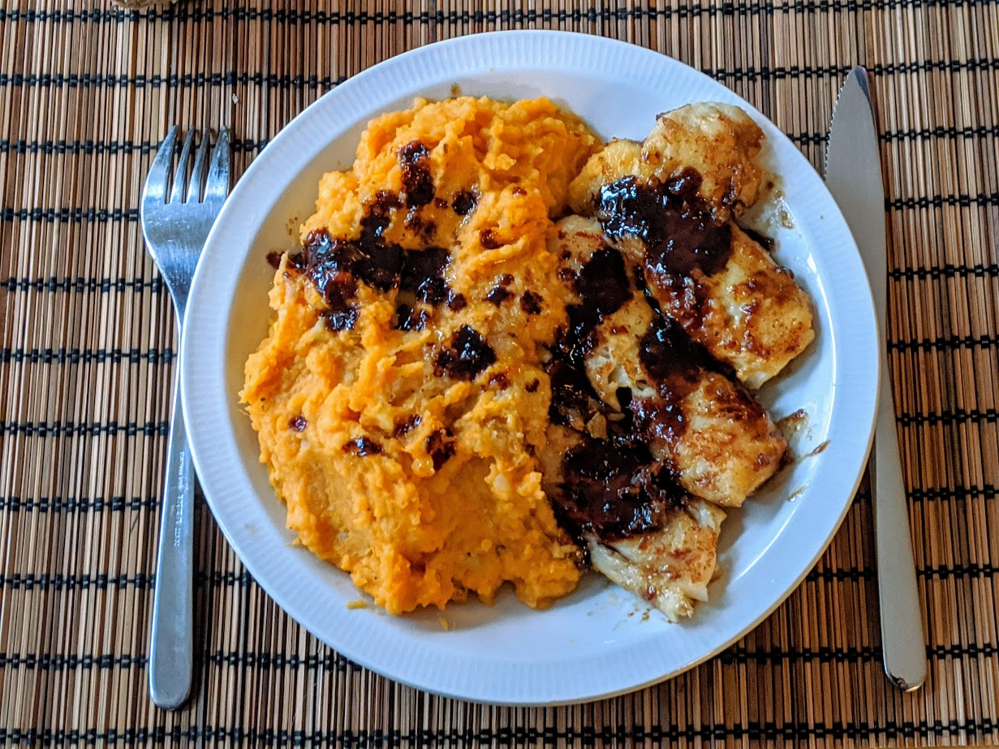

Cabillaud au miel et soja

Ici avec de la [purée de patates douces](PureeDePatatesDoucesGratinee.html)
Pour quatre personnes :
- Deux pavés de cabillaud
- Un peu de farine
- ~50g de beurre
- Une cuillère à soupe de sauce soja
- Deux cuillères à soupe de miel
- Sel
- Faire fondre le beurre dans une poêle à feu moyen.
- Verser un peu de farine sur une assiette et rouler les pavés dedans. Les secouer un peu pour que ça ne fasse pas des pâtés de farine.
- Mettre les pavés de cabillaud à cuire cinq minutes de chaque côté. Il faut que ça dore légèrement.
- Réserver les pavés de cabillaud au chaud (par exemple entre deux assiettes).
- Mettre la sauce soja et le miel dans la poêle, augmenter le feu, et mélanger jusqu'à ce que ça fasse plein de bulles. Servir immédiatement le poisson avec cette sauce.
Remarque : si les pavés de cabillaud sont surgelés et qu'on a pas pensé à les faire décongeler au frigo la veille, les mettre à l'extérieur un quart d'heure avant de commencer la recette, et augmenter le temps de cuisson de 10-15 minutes. Il faut au moins que leur extérieur soit un peu mou pour que la farine tienne.